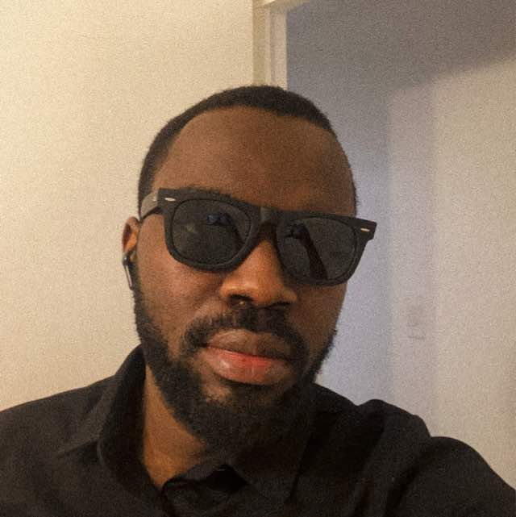

About Me
I'm Felix Oyeleke, an MBA candidate and documentary-style YouTube creator exploring geophysics, technology, and human stories from Atlantic Canada.

I create research-driven, documentary-style videos about geophysics, technology, and the people and places around Atlantic Canada — breaking complex ideas into grounded, human stories.
Professional Journey
I've always been drawn to the intersection of place, work, and technology — how geology, energy, and infrastructure quietly shape everyday life in Atlantic Canada.
Now, as an MBA candidate, I'm combining that curiosity with business thinking and storytelling — using YouTube to explore geophysics, tech, and the human stories behind them.
Areas of Expertise
Documentary-Style Storytelling
Planning, shooting, and editing reporting-style videos and video essays that feel grounded, visual, and human.
Geophysics & Place
Translating complex geophysical ideas and energy topics into plain language, tied to real locations in Atlantic Canada.
Tech & Creative Systems
Building simple, reliable systems and tools for research, scripting, and production — similar to how creators like Ali Abdaal structure their work.
Teaching & Explainers
Designing frameworks, visuals, and explanations that help people actually understand and remember what they're learning.
My Approach
"Good stories start with curiosity and stay grounded in real people, real places, and clear explanations."
I try to make videos that feel cinematic but practical — rooted in research, shaped by conversations, and edited so viewers leave with both a feeling and something useful they can apply.
Skills & Tools
Creative Production
- Story development & scripting
- Cinematography for documentary-style video
- Editing in a reporting / video-essay style
- Sound design & pacing
Research & Explainers
- Background research & source gathering
- Breaking down complex topics (like geophysics)
- Visual frameworks & diagrams
- On-camera teaching & narration
Systems & Tools
- Notion, spreadsheets & research databases
- Content planning & production pipelines
- Basic data & analytics for YouTube
- Simple automations that support creative work
Let's Work Together
If you have a collaboration idea, a story you think I should explore, or a project that fits this kind of work, I'd love to hear from you.
Get In Touch